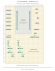
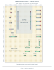

Uma placa30×45.39 fios preservados,23 novos;10 peças novas eRC522 externo. Propostas de60/69 peças não fazem parte desta montagem. Testes físicos pendentes.
Guia PDF em pt-BR · Fios e funções · Peças novas

